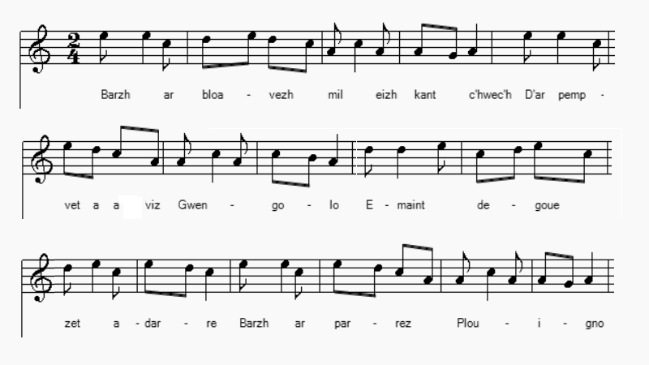
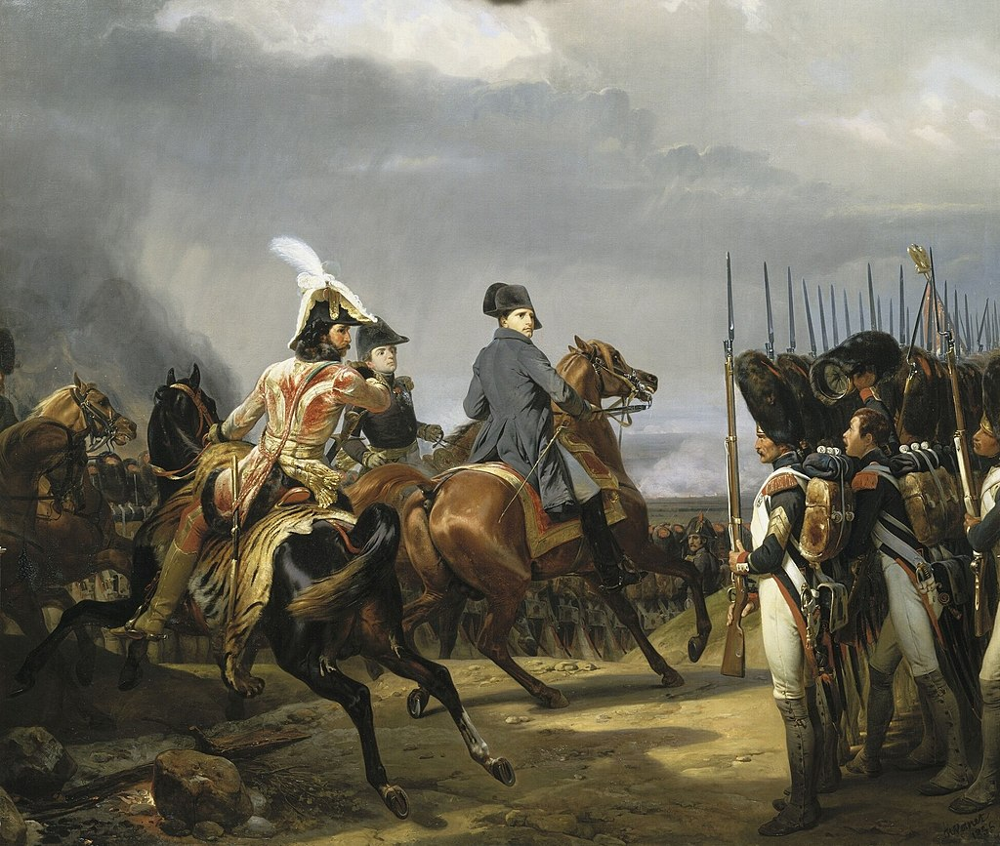

Ar goñskried
Les conscrits
The conscripts
Chant tiré du 2ème Carnet de collecte de La Villemarqué (p. 211bis - 212).
Mélodie
Arrangement Christian Souchon (c) 2020
|
A propos de la mélodie Les feuilles volantes où est imprimé le chant "Paotred Plouilho" portent toutes l'indication "War ton 'Adieu Pontrev'". Il s'agit sans aucun doute de l'air N°76 , "LXXVIII Paotred Plouilho, Conscrits de Ploumilliau" du recueil d'Alfred Bourgeois, "Kanaouennoù Pobl" A propos du texte J'ai tout d'abord pensé que La Villemarqué était le seul à avoir collecté ce chant . J'avais cependant noté qu'il existe un air de famille entre celui-ci et la complainte composée par Glenmor sur la mort tragique de Jean-Michel Kernaléguen, le 30 septembre 1976: Er bloavezh c'hwezek ha tri-ugent e dibenn Miz Gwengolo eo bet milliget paour ha perc'henn war menezioù Dineol... M. Jean-Yves Thoraval a dissipé cette erreur et expliqué ce paradoxe: Le texte noté par La Villemarqué reprend presque mot pour mot celui d'une gwerz largement diffusée sous forme de feuilles volantes, sous le titre breton de "Paotred Plouilho" et français de "Conscrits de Ploumilliau". Beaucoup de mots français ont été expurgés et remplacés par des équivalents bretons. Un couplet où s'exprime le ralliement de l'auteur à la cause impériale a également été éliminé. Ce chant de conscrit est repéré sous la référence M-00691 dans la classification Malrieu. Le site "tob.kan.bzh/" liste 16 versions et 34 occurrences de ce chant (la présente version non comprise). L'ouvrage de référence est l'étude de Laurence Berthou-Bécam consacrée à "L'enquête officielle sur les Poésies populaires de la France (1852-1876)" - François-Marie Luzel : Textes et sources, 1992. On y entend ce chant interprété par Claude Lintanf (mélodie légèrement différente de celle ci-dessus). Le lien vers la page en question est: https://tob.kan.bzh/chant-00691.html. |
About the melody The brodside sheets on which the song "Paotred Plouilho" is printed all bear the indication "War ton 'Adieu Pontrev'". It is undoubtedly the tune N ° 76, "LXXVIII Paotred Plouilho, Conscripts of Ploumilliau" from the Alfred Bourgeois' collection, "Kanaouennoù Pobl". About the text I first thought that La Villemarqué was the only collector to have recorded this song. I had however noted that there is a family likeness between this gwerz and the lament composed by Glenmor on the tragic death of Jean-Michel Kernaléguen, on September 30, 1976: Er bloavezh c'hwezek ha tri-ugent e dibenn Miz Gwengolo eo bet milliget paour ha perc'henn war menezioù Dineol... M. Jean-Yves Thoraval both dispelled this error and explained this paradox: The text noted by La Villemarqué takes up almost word for word that of a gwerz widely spread in the form of broadside sheets, under the Breton title "Paotred Plouilho" and the French title "Conscrits de Ploumilliau". Many French words appear to have been eliminated and replaced by Breton equivalents. A stanza expressing the author's rallying to the Imperial cause also was deleted. This conscript song has the reference M-00691 in the Malrieu classification. The site "tob.kan.bzh/" lists 16 versions and 34 occurrences of this song (this version not included). The reference work is the study by Laurence Berthou-Bécam devoted to "The official survey on the popular poems of France (1852-1876)" - François-Marie Luzel: Texts and sources , 1992. You can hear this song interpreted by Claude Lintanf (melody slightly different from the one above). The link to this page is: https://tob.kan.bzh/chant-00691.html. |
|
p. 211 bis Les conscrits Barrennet: M'am-bije sper... [1] 1. Barzh ar bloavezh mil eizh kant c'hwec'h, d'ar pempvet a viz Gwengolo, Emaint degouezhet adarre [2] barzh er parrez Plouigno [3] 2. Da monet kuit vit an arme ne ranko, m'am-bij' esper, Yaouannig Jakob d'eus ar vourc'h ha Gwillaou ar meliner. 3. Yannig bras d'eus ar c'hoajoù ha Pipi An Avidant [4] Pevar c'horf d'eus ar re vravañ, korvoù kaer ha tudoù vailhant. 4. Yaouannig [5] Jakob a lare an deiz-se d'e gamarad : - Hemañ zo din-me devezh trist hag a ra din kalz kalonad. 5. Gwell't ma mamm kaezh o ouelañ [6] ha ma zat ken glac'haret, Ma c'halon baour e-barzh me c'hreiz zo 'vit din-me kasi rannet. - 6. Kalz a dud a soñje gante: - Marteze vin ur poultron, Em-eus aon d'eus un tenn fuzuilh pe d'eus ur bouled kanon; (7] 7. Pe a-hend-all aon ar skuizhder, o vale dre an henchoù, Pa gousker war ur gwele-kamp pe e-barzh kraou ur jav. 8. Dougen ma dilhad war ma chouk, ma fuzuilh ha ma sabrenn 'Vale bemde a ger da ger, 'mesk ar fank hag ar bouilhenn 9. Hag an defin d'eus ma beaj rankout marteze kampiñ, Pe gousket war an douar yen pe a-hend-all bivouakiñ]. barrennet: Ar soudard kaezh - Piv 10. Arsa eta, va mignoned, kent evit kuitaat va c'hontre, Deomp-ni dan iliz Plouigno, evit pediñ c'hoazh hon Doue. 11. D'hon diwall dimeus bep gwall-chañs pa veomp-ni dan armeoù. Da frealziñ e-barzh ar ger an tadoù kaezh hag ar mammoù 12. - Kenavo deoc'h iliz Plouigno hag he holl habitanted, Kenavo deoc'h, ilis ma bro lech on bet komuniget! 13. Kenavo, holl, amezeien, holl gerent ha mignoned. Pedit Doue hag ar Verc'hez da gaout soñj ac'hanomp, 14. Pedit Doue hag ar Verc'hez da gaout soñj ac'hanomp, Hag hon ael mat da zont dhon heul, e bep-lec'h, elec'h ma viomp. 15. - Keno, ma mab, ma esperañs, eme an tad glacharet, Piv a frealzo da dud kaezh, goude ma vi diblaset? 16. Pa vin diskaret gant kozhni, me vo klevet o laret: - Mar vije bet ma mab er ger, me gantañ gwellaet. - 17. Klevet ar vamm o kimiadiñ ivez dimeus he bugel: - Deuz amañ, etre ma divrec'h, ur wech choazh kent mervel. 18. 'Barzh ma zistroez-te dar ger, me vo aet d'eus ar bed-mañ, Deuz amañ etre ma divrec'h, evit ar wech diwezhañ! - 19. Ar soudard kaezh ken glac'haret c'hoazh kent evit partiañ C'hoazh evit esaeal o frealziñ a lare en ur ouelañ : 20. - Tavit, ma zad ha ma mamm gaezh ha bevet en esperañs Doue an Tad zo trugarezus ha bras eo E brovidañs. . 21. Barzh ma vezo fin dar vrezel, ha gounezet ganeomp-ni [9] Dre c'hras Doue hag ar Verc'hez e achuo, hon enkrez-ni 22. Evit merk d'eus hor vaillantiz ha lore war hon tokoù, Me a zistreyo c'hoazh dar vro, evit sec'hañ ho taeroù. = KLT gant Christian Souchon (c) 2020 |
p. 211 bis Les conscrits Barré: Si j'avais de l'espr... [1] 1. C'est en l'an mille huit cent six, Le cinq septembre que l'on vit Réunis ensemble à nouveau [2] Les paroissiens de Plouigneau [3] 2. La conscription, voilà l'affaire: Y échapper c'est ce qu'espèrent, Yves Jacob le villageois Guillot le meunier, pourquoi pas? 3. Le grand Yannick, l'homme des bois, Pierre le citadin [4]. Mais quoi, Tous quatre sont fort bien bâtis, Ils sont sains de corps et d'esprit!. 4. Et Yves [5] Jacob déclara A son compagnon, ce jour-là : - Ce jour c'est d'une pierre noire Qu'il est marqué dans mon histoire. 5. Voyez pleurer ma pauvre mère Et mon père. Larmes amères! [6] Mon pauvre cur en ma poitrine Est près de rompre, j'imagine... - 6. Les gens se demandaient anxieux: Si j'étais peut-être un peureux, Qu'un coup de feu pût effrayer, Alors un canon, vous pensez! [7] 7. Si la fatigue je redoute Quand on marche le long des routes, Que pour dormir un lit de camp, Ou quelque écurie vous attend. 8. Je trimballerai sur mon dos Sabre, fusil et oripeaux En pataugeant de bourg en bourg Dans la même boue, chaque jour. 9. Peut-être qu'au bout du voyage D'un campement j'aurai l'usage: Dormir à même le sol froid Ou bivouaquer, j'aurai le choix... barré: Le pauvre soldat - Celui qui... [8] 10. C'est pourquoi, mes bien chers amis, Avant de quitter le pays, A l'église de Plouigneau Nous irons prier le Très-haut. 11. Qu'Il éloigne de nous la guigne Quand nous devrons monter en ligne. Qu'Il réconforte en nos logis Nos père et mère au cur meurtri. 12. Plouigneau, à ta chère église Et à tous il faut que je dise, Adieu! Église du canton, De ma première communion! 13. A tous mes chers voisins, adieu! Mes amis et parents, je veux Que vous priiez le Roi du monde Et la Vierge qu'Ils nous secondent, 14. Priez la Vierge et le Bon Dieu Qu'Ils nous soient miséricordieux, Que notre bon ange nous suive En tout lieu, quoi qu'il arrive!. 15. - Adieu mon fils, mon espérance, Dit le père. De leur souffrance: Qui consolera tes parents, Dès lors que tu seras absent? 16. Atteint du mal de la vieillesse On m'entendra dire sans cesse: - Si mon fils était près de moi, Il mettrait bon ordre à cela... - 17. La mère à son tour prend congé De ce fils qu'elle a tant aimé: - Viens, lui dit-elle, entre mes bras, Ce sera la dernière fois. 18. Quand tu reviendras, je le sais, Ce monde je l'aurai quitté, Qu'entre mes bras vienne mon fils. On me prive à jamais de lui! - 19. Le pauvre soldat affligé, Avant qu'il ne prenne congé Pour les consoler du malheur, Leur dit, les yeux noyés de pleurs: 20. - Père et mère, faites silence Et demeurez dans l'espérance! Dieu le Père est Dieu de pitié Et Sa providence est bonté. . 21. Quand la guerre s'achèvera - Et nous la gagnerons, ma foi, [9] Grâce à la Vierge et grâce à Dieu - L'angoisse quittera ces lieux. 22. Pour couronner notre vaillance Des lauriers orneront nos fronts Quand nous regagnerons la France Et vos pleurs nous les sécherons! = Traduction Christian Souchon (c) 2020 |
p. 211 bis Conscripts Crossed out: If I were wit... [1] 1. In one thousand eight hundred six, And on the 5th of September Once more [2] the men of the parish Plouigneau [3] had come together 2. Each of them could be a soldier: They hoped the draft board would spare them. Youenn Jacob the villager And Guillot, the miller, his chum 3. Big Yannick, the man of the moor, Citizen [4] Peter hoped they would... But healthy and well built, all four, For the army they were quite good 4. And Youenn [5] Jacob did confess: To his companion on that day: - Today is a day of sadness It is a black stone on my way. 5. See how my mother is distressed [6] And my father sheds bitter tears! As for my poor heart in my chest It's about to break, I fear.. - 6. Many people shyly wonders - Maybe he will be but a coward, Who's scared when a gunshot thunders Still more by a cannonball's power. [7] 7. You dread fatigue that overcomes You, when you walk on the highway And have to sleep in fabric slums Or share with horses stable hay. 8. Carrying rifle and saber Hanging from your waist, from your back Wading in the mud, your tatters And rugs wrapped up in your knapsack. 9. Now, when the trip comes to an end Maybe a camp will be your lair: Sleep on the cold floor in a tent Or bivouac in the open air ! Crossed out Unfortunate soldier - Whoever... [8] 10. Therefore, my friends, I do suggest Before we leave our dear country, That we went to Plouigneau church And that we prayed to God humbly. 11. May He remove bad luck from us. Whenever a new fight will start. And may He comfort in our homes Our old parents with broken hearts. 12. Plouigneau church, I say farewell To all the faithful and to you. Farewell to the town where I dwell The church where I was born anew! 13. Farewell too, to the dear array Of friends and neighbours. To the Lord And the Holy Virgin I'll pray: May your happiness be restored! 14. May the Lord to us be gratious! May he protect us in the fray! May our good angel follow us Wherever we happen to stray !. 15. - Farewell my son, my dear offspring! Who will console your old parents, Said the father, in their suffering: As long as you will be absent? 16. Stricken with old age's sickness I will say over and over: - My son had shielded my weakness, He would have put it in order .. - 17. The mother in turn has taken Leave from her son she loved so much: - Come in my arms, I'm forsaken, O, this embrace will be the last. 18. For well I know when you return, This lesser world I shall have left, Come my son, come into my arms. I'm of you forever bereft! - 19. And the poor soldier in distress Before setting off, once again With his eyes drowned in tears, expressed His sympathy, to ease their pain: 20. - Father and mother, be silent Unfortune does not hope preclude ! On God's goodness be reliant Endless is His solicitude. . 21. When the war has come to an end - I trust we will be victorious, [9] Thanks to Mary, led by God's hand - Then anguish will leave these places. 22. As a token of our valiance Laurel wreaths will adorn our brows, And once we have returned to France, We shall dry your tears of sorrows. = Translation Christian Souchon (c) 2020 |
NOTES
|
[1] La double strophe sautée par La Villemarqué est une introduction qui ne brille pas par son originalité: M'am-bije spered da gomprenn evel am-eus fallazi Me'm-bije 'n em implijet da ganañ, da gompoziñ Ur c'himiad leun a c'hlac'har graet da gonskried yaouank Pe-re 'deus tennet ar bilhed 'barzh er bloavezh-mañ prezant. Si j'avais l'esprit à chanter, selon mon désir fervent, Je voudrais composer un chant, "lever " un sône émouvant, Un "kimiad", un adieu navré pour quelques jeunes conscrits Qui viennent de tirer au sort et que la Loi nous a pris. Cette traduction en vers de quinze pieds est celle publiée par Camille Le Mercier-d'Erm dans la revue "An Oaled" N°36 de 1931. Curieusement, à la strophe suivante ,il change "1806" en "1906" (mil nav c'hant c'hwec'h), car, nous dit le présentateur du poème, qui signe "F.J." , "le 2 août 1914, le tocsin sonnait de nouveau au clocher de Ploumilliau... [et le traducteur] fut frappé par l'analogie des situations de 1806 et de 1914...". Il termine en recommandant de lire à haute voix la traduction et de "s'essayer à prononcer les vers français avec l'accent de 'Lann-î-on', [car] on se rendra mieux compte de l'originalité d'un français volontairement bretonnisé!". [2] "Le 5 septembre 1806": Les historiens ne semblent pas avoir conservé le souvenir de cet événement. "Adarre", à nouveau: si la conscription est une réalité ancienne (cf. Les 4 menuisiers, "tirage à la milice" institué en 1688) , les guerres de la République, puis de l'Empire firent des levées de conscrits une réalité aussi pénible que récurrente . Le chant Les gars de Lannion" évoque celle des 280 000 "Marie-Louise" en 1813. [3] Plouigneau: une petite ville à 10 km à l'est de Morlaix. On ne peut guère douter qu'il s'agisse, dans la gwerz originale de Ploumilliau (breton "Plouilio") entre Lannion et Plestin-les-Grèves, car dans plusieurs autres versions, l'équivalent de la strophe 12 contient le vers: "Adieu deoc'h, Aotrou Milio, patron eus ar barrez-mañ..." "Adieu Saint Milliau, patron de cette paroisse." Plou-Milliau signifie précisément "plebs" (paroisse) de Milliau". [4] An avidant: Dans la version La Villemarqué les noms des 4 conscrits désignés par le tirage au sort semblent correspondre aux diverses couches de la société de Basse-Bretagne en ce début de 19ème siècle: l'habitant d'un bourg rural, un meunier, un sabotier (vivant dans les bois ) et un "avidant", mot qui pourrait désigner un "citadin". En réalité, les noms des conscrits, fidèlement conservés par les autres versions sont Erwanig Jakob (Yves Jacob), Yannig (Jean) Prad, Pierre-Marie Lavéant (Pipi an Aveant),et Gwilh-Jañ Ar Meledar (Guillaume-Jean Le Mélédar). Mme Berthou-Bécam signale que l'écrivain breton "Taldir" Jaffrennou (1879 - 1956) attribuait ce chant à Guillaume Le Mélédar, l'un des quatre conscrits; Camille Le Mercier-d'Erm, l'attribuait à son camarade Yves Jacob. L'auteur du "Catalogue bibliographique de la chanson populaire bretonne", Joseph Ollivier (1878 - 1946) penche pour la thèse du professeur Louis Le Guennec (1878 - 1935) suivant laquelle il s'agirait d'une composition sur commande du barde Jean Le Guen (Yan Ar Guen) (1774 - 1849). La présente "version La Villemarqué" où tous les noms se trouvent déformés, comme ce "Meledar" qui devient "miliner" (meunier), ne permet certainement pas de clarifier ce problème d'attribution. [5] Iowannik: une fois n'est pas coutume, les pages 211bis et 212 du manuscrit, presque entièrement dépourvues de surcharges, sont facilement lisibles. Le prénom du nommé Jakob est noté d'abord "Iowannik" (str. 2), puis "Iouanik" (str.4). Le dictionnaire du Père Grégoire ne connaît qu'une traduction pour le prénom "Jean": "Yann" ("Yehan" ou "Yahan" en dialecte de Vannes). Bien que le prénom breton vienne comme le français du latin "JOhannes", on peut penser que le prénom visé dans ces strophes soit "Youenn", une des nombreuses formes du prénom "Yves", plutôt que "Yann" Le rapprochement avec les autres versions où ce personnage s'appelle "Erwanig Jakob", montre que cette hypothèse est la bonne. M. Daniel Giraudon, professeur d'ethnologie à l'université de Bretagne Occidentale, dans " Une chanson de conscrit en langue bretonne" (Société d'Émulation des Côtes-du-Nord, tome CXVI, 1987), apporte d'autres précisions à propos des protagonistes de cette gwerz : "Des quatre conscrits cités dans la chanson, trois moururent : Erwanig Jakob fin 1807 à Padoue, Yannig Prad début 1808 à Venise et Pierre-Marie Lavéant en mai 1812 à Figueras. Seul, Guillaume Le Meledar survécut aux campagnes. Il reprit son métier de tailleur, épousa la fille d'un boulanger de Ploubezre et s'installa à Servel où il mourut, en 1855, à l'âge de 69 ans." Trois morts sur quatre conscrits! De quoi étayer la statistique proposée par la page Wikipédia "Pertes humaines lors des guerres napoléoniennes (1803 - 1815)": pertes à la fois civiles et militaires entre 3 250 000 et 6 500 000! Notons que l'on a organisé récemment une exposition consacrée à Napoléon aux (anciens) abattoirs de La Villette. [6] O ouelañ::"En pleurs". On pleure beaucoup dans ces chants de départ de soldats. Il semble qu'il s'agisse d'une figure imposée dans ce genre de poèmes par un goût immodéré de la muse bretonne pour le "dolorisme" (cf. Guillaume Ar Gall, note [4]). L'essentiel du poème est consacré à ces lamentations, bien qu'on n'ait pas recours à la formule consacrée dans les gwerzioù "Cruel le cur qui n'eût pleuré..." (Kriz vije ar galon na ouelje). Le corollaire de ce tropisme est la ferveur religieuse sincère et profonde qui s'exprime tout au long de cette gwerz. [7] Bouled kanon, bivouakiñ...: Ce chant se distingue des poèmes similaires en ce qu'il décrit assez précisément la vie quotidienne du soldat de la Grande armée. La langue bretonne s'"enrichit" de mots nouveaux: kampiñ, bivouakiñ, kordegard... [8] La double strophe manquante, entre les strophes 9 et 10, dont La Villemarqué n'a noté que le premier mot "Piv" (qui?), aussitôt barré, choquait peut-être les convictions légitimistes du "Barde de Nizon". La voici: "Tor en-deus an neb a zoñjfe, e c'hallje lenn em c'halon Evit gwelout va bolontez pe va inklinasion Ma ne faotje ken 'met va gwad, me hen skuilhje ken joaius Evit souten an Impalaer, un tad ken karantezus." "Il a tort celui qui croirait pouvoir lire en mon cur Pour y voir ma volonté et mon inclination. S'il ne fallait que mon sang, je le verserais bien volontiers Pour soutenir l'Empereur, ce père si bienveillant." Il est de fait que le ton général de la pièce (cf. note 6) n'incite pas à suspecter chez un conscrit un tel ralliement à l'Empire. [9] Ar vrezel gounezet ganeomp. "Cette guerre que nous gagnerons".. Si la servitude est évoquée, la grandeur n'est pas absente de ce tableau de la vie militaire: victoire et lauriers récompenseront les souffrances endurées par les conscrits de Plouigneau (Est-ce le résultat de la propagande?) En effet, la campagne de Prusse de 1806 fut couronnée de succès: deux victoires éclatantes remportées le même jour, le 14 octobre 1806, à Iéna et à Auerstaedt. Le 2ème traité de Tilsit inflige à la Prusse la perte de la moitié de son territoire, mais génère chez les Allemands un violent nationalisme qui aboutira à l'unification de cette nation pour le plus grand malheur de son voisin français. Bismarck dira "Sans Iéna, pas de Sedan". |
[1] The double stanza skipped by La Villemarqué is an introduction which does not stand out for its originality: M'am-bije spered da gomprenn evel am-eus fallazi Me'm-bije 'n em implijet da ganañ, da gompoziñ Ur c'himiad leun a c'hlac'har graet da gonskried yaouank Pe-re 'deus tennet ar bilhed' barzh er bloavezh-mañ prezant. If I had enough wit to sing, as requires my fervent desire, I'd feel like composing a song, aye, and "raising" a moving poem, A heartbreaking farewell lament for some young conscripts of our town Who has just drawn lots and who are taken from us, whom laws require. This fifteen foot verse translation was published by Camille Le Mercier d'Erm in the review "An Oaled" No. 36 in 1931. Curiously, in the following stanza, he changes "1806" to "1906" (mil nav c'hant c'hwec'h), because, so says the presenter of the poem, who signs "FJ" , "on August 2, 1914, the tocsin sounded again at the bell tower of Ploumilliau ... [and the translator] was struck by the analogy of the situations in 1806 and 1914 ...". The comment ends by recommending to read the translation aloud and to "try to pronounce the French verses with the 'Lann-î-on' accent, [so as] to better feel the originality of a French language that is Bretonnized on purpose! ". [2] September 5, 1806 : Historians do not seem to have preserved the memory of this event. "Adarre", again : if conscription is an old reality (cf. The 4 carpenters , a song about the "militia draft" instituted in 1688) , the Republican, then the Napoleonic wars made the levies of conscripts a reality as painful as they were recurrent. The song The Lads of Lannion " evokes the levy of the 280 000 so-called "Marie-Louise " men in 1813. [3] Plouigneau : a small town 10 km east of Morlaix; One can hardly doubt that the original gwerz refers to Ploumilliau (Breton "Plouilio"), between Lannion and Plestin-les-Grèves, because in several other versions, the equivalent of stanza 12 includes the line: "Adieu deoc'h, Aotrou Milio, patron eus ar barrez-mañ ..." "Farewell Saint Milliau, patron of this parish." Plou-Milliau precisely means "plebs" (parish) of Saint Milliau ". [4] An avidant : The four conscripts represent a panel of the layers of Lower Brittany society at the beginning of the 19th century: an inhabitant of a rural village, a miller, a clog maker (living in the woods) and an "avidant". The internal logic of the story wants this last word to designate a profession or a social state. In fact, the names of the conscripts, faithfully preserved by the other versions, are Erwanig Jakob (Yves Jacob), Yannig (Jean) Prad, Pierre-Marie Lavéant (Pipi an Aveant), and Gwilh-Jañ Ar Meledar (Guillaume-Jean Le Mélédar ). Mme Berthou-Bécam states that the Breton writer "Taldir" Jaffrennou (1879 - 1956) attributed this piece to Guillaume Le Mélédar, one of the 4 conscripts in the song; Camille Le Mercier-d'Erm attributed it to Le Mélédar's comrade, Yves Jacob. The author of the "Bibliographic Catalog of Breton Popular Songs", Joseph Ollivier (1878 - 1946) leans in favour of the thesis of Professor Louis Le Guennec (1878 - 1935): it could be a commissioned work performed by bard Jean Le Guen (aka Yan Ar Guen) (1774 - 1849). The present "La Villemarqué version" where all the names are distorted, like "Meledar" which becomes "miliner" (Miller), will hardly clarify this attribution issue. [5] Iowannik : once is not customary. Pages 211bis and 212 of the manuscript, almost entirely devoid of overwriting, are easily legible. The first name of the named Jakob is noted first as "Iowannik" (str. 2), then as "Youanik" (str.4). Father Grégoire's dictionary only knows one translation for the first name "Jean" (John): "Yann" (or "Yehan" or "Yahan" in the Vannes dialect). Although the origin of both the Breton and the French first name is the Latin "JOhannes", we may assume that the first name meant in these stanzas is "Youenn", one of the many forms of the first name "Yves", rather than "Yann" The comparison with the other versions where this character is called "Erwanig Jakob", shows that this assumption is correct. Mr. Daniel Giraudon , professor of ethnology at the University of Western Brittany, in "A conscript song in the Breton language" (Société d'Émulation des Côtes-du-Nord, volume CXVI, 1987), brings other details about the protagonists of this gwerz: "Of the four conscripts mentioned in the song, three died: Erwanig Jakob at the end of 1807 in Padua, Yannig Prad at the start of 1808 in Venice and Pierre-Marie Lavéant in May 1812 in Figueras. Only Guillaume Le Meledar survived the campaign. He resumed his trade as a tailor, married the daughter of a baker at Ploubezre and settled in Servel, where he died in 1855 at the age of 69." Three dead out of four conscripts, which support the statistics set forth by the Wikipedia page "Human losses during the Napoleonic wars (1803 - 1815)": losses both civil and military between 3,250,000 and 6,500,000! Note that an exhibition was recently dedicated to Napoleon at the (former) slaughterhouses of La Villette in Paris. [6] O ouelañ :: "In tears". They cry quite a lot in these soldiers' departure laments. This seems to be a sort of compulsory figure in this class of poetry, imposed by the Breton muse's delight in "dolorism" (cf. Guillaume Ar Gall , note [4]). The main part of the song is devoted to lamentations, which astonishingly do not recourse to the usual phrase "Cruel the heart which would not have wept ..." (Kriz vije ar galon na ouelje). br> The corollary of this is the sincere spirit of deep religious fervour which pervades the whole gwerz. [7] Bouled kanon, bivouakiñ ... : This song differs from similar poems in that it describes rather accurately the daily life of a soldier of the Grand Army. The Breton language is "enriched" with new words: kampiñ, bivouakiñ, kordegard ... [8] The missing double stanza, between stanzas 9 and 10, of which La Villemarqué only noted the first word "Piv" (who?), whuch he immediately crossed out, perhaps shocked the "Bard of Nizon" 's staunch Legitimism. Here it is: "Tor en-deus an neb a zoñjfe, e c'hallje lenn em c'halon Evit gwelout va bolontez pe va inklinasion Ma ne faotje ken 'met va gwad, me hen skuilhje ken joaius Evit souten an Impalaer, un tad ken karantezus. " "He is wrong who thinks he can fathom my heart To see my will and my inclination. If it only needed my blood, I would gladly shed it To support the Emperor, this benevolent father. " It is a fact that the general tone of the piece (cf. note 6) does not prompt us to suspect in a conscript such adhesion to the Empire. [9] Ar vrezel gounezet gaaneomp. "This war that we will win" .. If servitude is mentioned, greatness is not absent from this picture of military life: victory and laurels will reward the sufferings endured by the Plouigneau lads. (Is this the result of propaganda?) Indeed, the Prussian campaign of 1806 was crowned with success: two resounding victories gained on the same day, October 14, 1806, at Jena and Auerstaedt. The 2nd Treaty of Tilsit inflicted on Prussia the loss of half of its territory, but generated among the Germans a violent nationalism which was to lead to the unification of this nation to the great misfortune of its French neighbour. Bismarck said once "Without Jena, no Sedan". [3] |

La bataille d'Iena, le 14 octobre 1806, par Horace Vernet
"Les Chouans selon Villemarqué", un livre au format A4.  Cliquer sur le lien ou sur l'image ci-dessus |